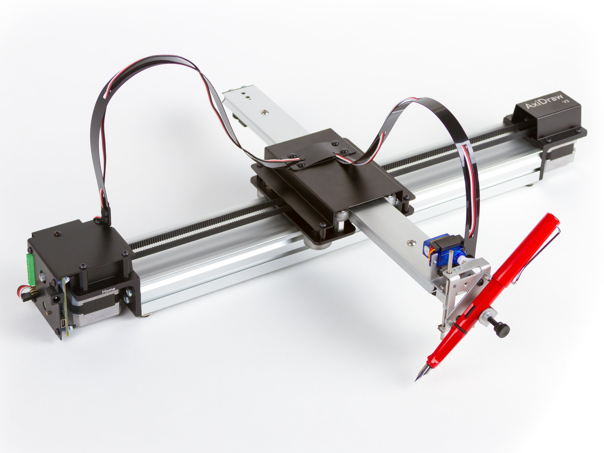
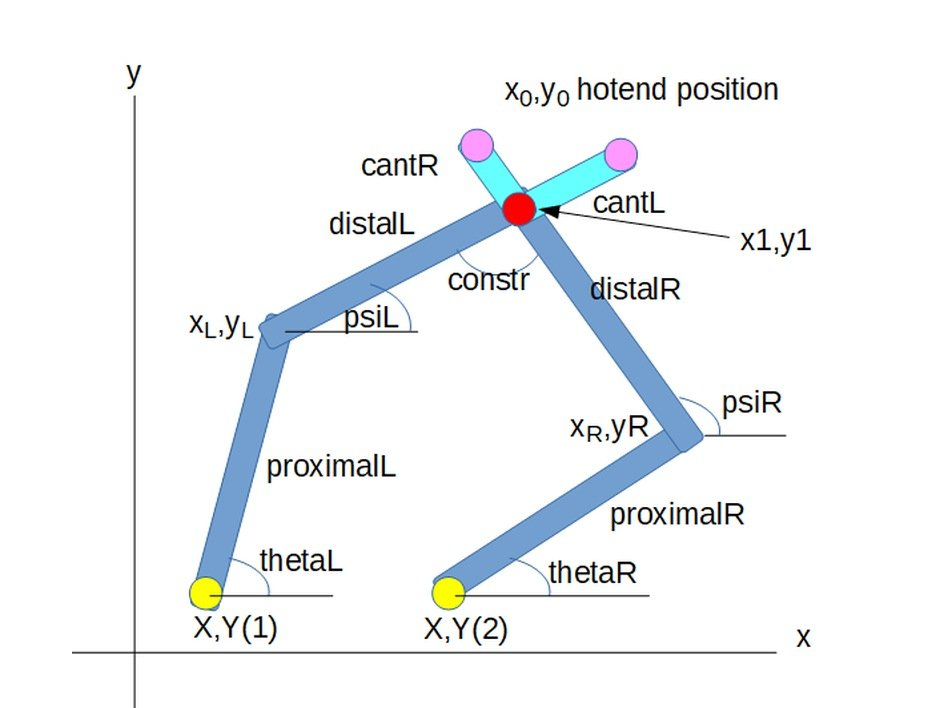
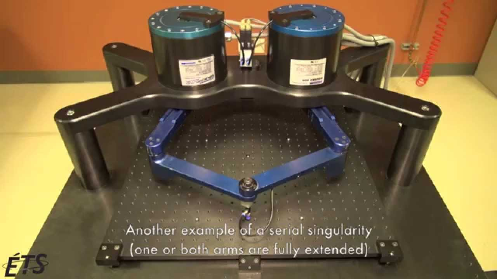
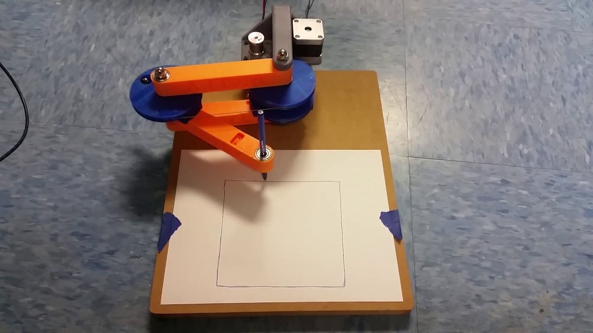
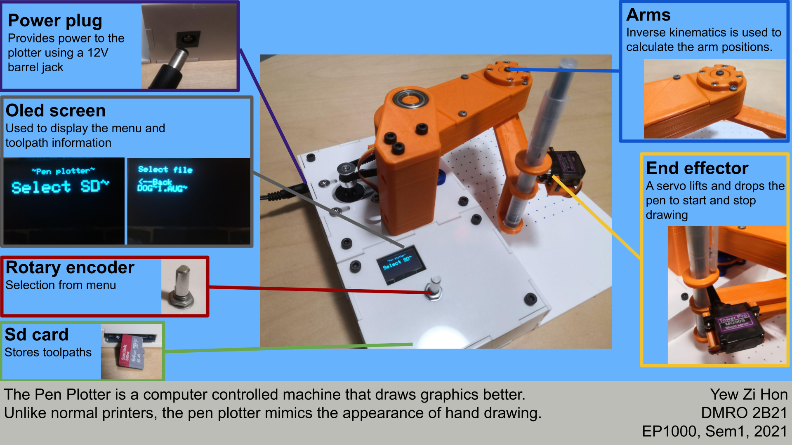
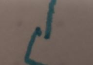
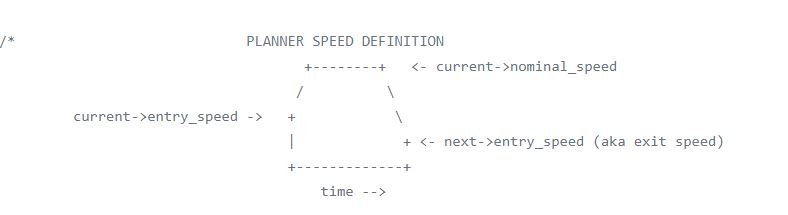

Final Project ---work in progress---
Here lies the documentation of my final project, the pen plotter.
Click on a link below to jump to a section:
- Ideation
- Features(expected completion 26)
- First prototype-CAD(expected completion 26)
- First prototype-inverse kinematics(expected completion 26)
- First prototype-Programming(expected completion 26)
- First prototype-Electronics(expected completion 26)
- First prototype-file format(expected completion 26)
- First prototype-toolpath generation(expected completion 26)
- First prototype-Testing(expected completion 26)
- First prototype-problems(expected completion 27)
- Second prototype-CAD(expected completion 27)
- Second prototype-inverse kinematics(expected completion 27)
- Second prototype-problems(expected completion 27)
- Final prototype-CAD(expected completion 27)
- Final prototype-BOM(expected completion 27)
- Final prototype-3D printing(expected completion 27)
- Final prototype-Laser cutting(expected completion 27)
- Final prototype-Electronics(expected completion 27)
- Final prototype-Testing(expected completion 27)
- Final prototype-slide
- Final prototype-video
- Final prototype-How to use the pen plotter(expected completion 26)
- Final prototype-Possible improvements
Ideation
There are many types of kinematics systems to choose from when designing. The below are the three kinematic systems considered. The scara robot was chosen as the final design as it was different from the cartesian systems. In addition, it is simpler comapared to the cartesian and the parallel bar because it requires lesser linkages and motion components to function.
Cartesian robot
Parallel bar robot

Scara robot
Features
First prototype-CAD
First prototype-inverse kinematics
First prototype-Programming
First prototype-Electronics
First prototype-file format
First prototype-toolpath generation
First prototype-Testing
First prototype-problems
Second prototype-CAD
Second prototype-inverse kinematics
Second prototype-problems
Final prototype-CAD
Final prototype-BOM
Final prototype-3D printing
Final prototype-Laser cutting
Final prototype-Electronics
Final prototype-Testing
Final prototype-slide

Final prototype-video
Final prototype-How to use the pen plotter
Final prototype-Possible improvements
Backlash
Although the backlash is lesser than the second prototype, there is still some backlash. This can be seen in the below photo. The start and end point are not the same.
Inaccurate motion
Linear interpolation is done in steps of 1mm this, can be decreased to make the motion more accurate.
Movement planning
CNC controllers like GRBL will plan movements in advance and create a buffer so that the velocity and acelleration of the arms will change slowly to avoid jerky motion and maintain a high accuracy.
Lack of accelleration
There is no accelleration when driving the stepper motors and leads to jerky motion. The speed is also has to be kept low to avoid skipped steps.
Unoptimised program
digitalWrite() was used in the program but the function has a relatively long execution time and port manipulation would have been faster. Using timer interupts instead of delay would also have allowed the microcontroller to perform other tasks while in the delay.
Thank you for reading! 😃